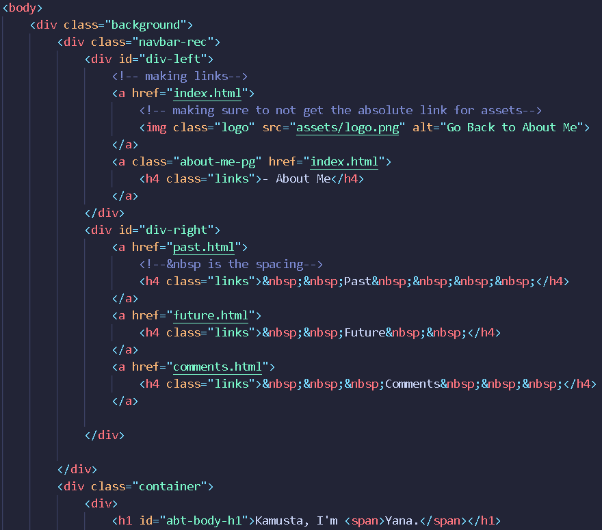
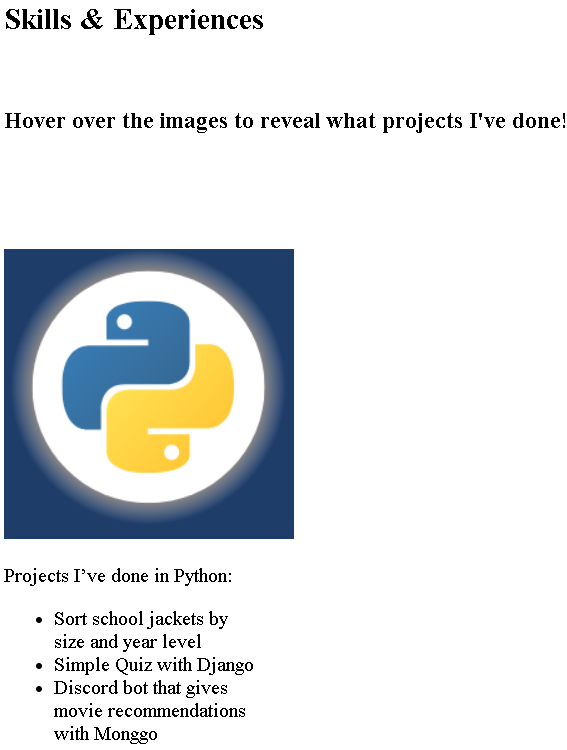
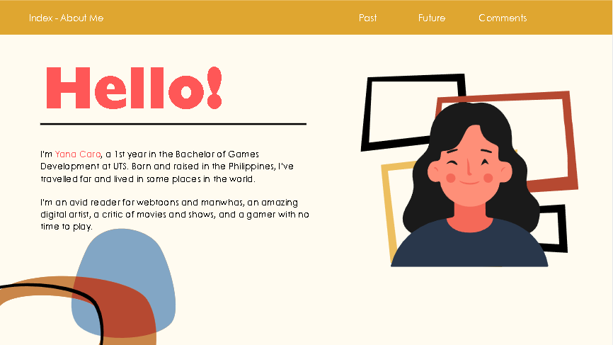
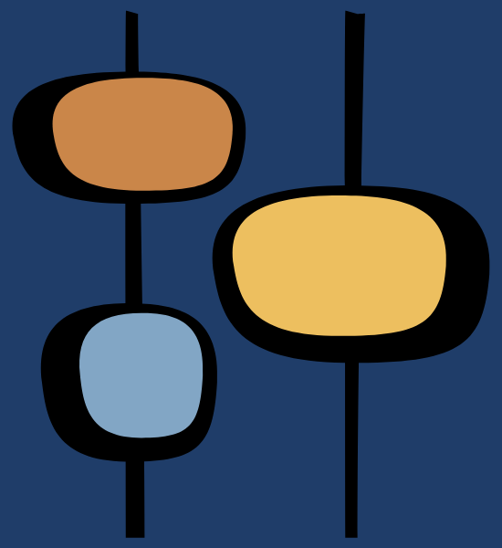

Selected Work
Div tag
In this project, I used an extensive amount of the <div> element to manipulate how
I want the layout of my website to look. The main purpose of the <div> tag is to define a division or section in an HTML dcouments. It also acts as a container for various elements.
Elements such as <h1>, <h2>, and <img> are placed within the container and then styled in CSS to control how they appear on the website.
Below is an example of how the <div> element was used in my assignment. In this case, the <div> helps organise and control the elements
within the navigation bar, as shown by the class name "navbar-rec". It also contains two different IDs, "div-left" and "div-right"
separates the contents and elements, allowing me to effectively adjust how they behave in the navigation bar.

expected output:
Since this was my first time delving into web development, I eneded up creating numerous classes and IDs to reference. My approach to organising
them was quite excessive, resulting in my CSS file growing to 613 lines. Moreover, throughout this assignment, there are over 100
<div> tags used to achieve what I wanted through the use of classes and IDs. This will be discussed in more detail later.
Anchor text
In this project I utilised the <a> tag, which defines a hyperlink
that creates a link to other webpages, files and many more. It also displays a clickable link
through the href. The href attribute is crucial as it specifies the link’s destination. In this case, I used
the anchor text to make a link between the HTML pages of my website. As shown in the example below, I also used an image
as a link to the "About Me" page. I believed this feature would greatly enhance both the quality and accessibility
of my website, as it gives users an additional option to navigate back home.

Styles Used
In this section, the following is a table that showcases some of the many CSS classes and IDs used throughout the website to achieve the overall look, design and functionality I envisioned for this assignment.
| Name | Type | Contents | Description |
|---|---|---|---|
| div-left | id |
width: 40%;
display: flex; justify-content: flex-start; align-items: center; |
Since it is nested, this allows the programmer to manipulate only the contents on the left-hand side of the parent div as it is becomes the child element. This can be found in the navigation bar. |
| div-right | id |
width: 50%;
padding: 25px; display: flex; justify-content: flex-end; align-items: center; |
Since it is nested, this allows the programmer to manipulate only the contents on the right-hand side of the parent div as it is becomes the child element. This can be found in the navigation bar. |
| container | class |
display: flex;
flex-direction: row; position: relative; padding-left: 3rem; |
This allows the programmer to explicitly group and organise other elements within a webpage. It provides a more strucutred and responsive way to style the website. |
| body | class |
margin: 0;
padding-top: 1rem; max-width: 0; max-width: 37rem; font-family: Century Gothic, Arial, Helvetica, sans-serif; font-size: 1.25rem; text-align: left; |
This allows the programmer to define the main contents of the webpage.
This tag is placed in between the html tag, and it includes the text,
images and other HTML elements needed for the webpage. It also represents the main container
for the appearance and aesthetics that the user will see.
|
| table, th, td | element |
margin: auto;
border: 3px solid; padding: 1rem; border-radius: 4px; text-align: left; color: aliceblue; font-family: Century Gothic, Arial, Helvetica, sans-serif; |
This selector applies to the same styles to all <table>, table header and table data elements.
|
| code | element |
background-color: #1f282e;
border: 1px solid; border-color: azure; border-radius: 3px; line-height: 5px; font-family: 'Courier New', Courier, monospace; |
This selector applies to the same styles to all <table>, table header and table data elements.
|
| navbar-rec | class |
display: flex;
border: 1px solid; justify-content space-between; height: 80px; width: 100%; background: #29374b; |
This creates the navigation bar, where the div-right and div-left are used to separeate the links and logo of the website. |
Design Choices
Accessibility
The Web Assignment was somewhat successful in terms of accessibility.
Web developers have the responsibility to ensure that websites are
inclusive and allow all users to navigate and interact with the elements
on the webpage easily. However, due to my lack of experience in web
development, I overlooked the mobile responsiveness as I placed much
emphasis on how the website will appear on a laptop. After I tested the
site on different devices towards the end of the development stage, which
was in week 8, the layout and contents of the website on mobile devices, such
as the Samsung S20 FE, performed poorly. The text would clip into the left side,
and some of the images would be too small to be read. Yet despite my lack of
knowledge, I was able to successfully deliver a highly responsive website on a
laptop and devices with larger screens. This was strongly evident in the “Past”
page, as the animation of the images fading in and out as the user hovers the mouse
over it successfully responds and reveals the text behind the icon.
Additionally, I purposefully made the text on my website large enough for those
with difficulty seeing to have an easier time navigating my site. To achieve this,
I tested different font sizes with many of my peers on a number of occasions, asking constantly if the text on the
screen was legible. Moreover, I utilised the <span> tag to highlight
important information as well as make the content visually appealing. Furthermore, in the
event that the CSS of my website is turned off or unable to function, the contents of each page are still readable and
intuitive to navigate and understand.

As seen above, the text and images are designed extremely well that when CSS is turned off it
still reads well. Moreover, the images and icons used throughout the
website all have <alt> tags. These tags are integral to ensuring that a website is accessible
as it allows users who regularly use screen readers or other assistive technologies to relay
the information about the graphic elements back to the reader. It also provides information
to users what the image would be if the image could not be displayed due to external factors
such as weak internet connection. When creating the <alt> tags for the graphics I used throughout
the webpage, I made sure that the text is short and concise. This eliminates the overwhelming
amount of information displayed for the user. Overall, though the website does not function well on mobile devices, it was highly
successful in being accessible on devices with a large screen as well as taking into
careful consideration to the size, colour of the text and extra description of the image and graphics used through
the <alt> tags.
Colour
Colours play a powerful role in design. During
the initial stages of designing my website, I
aimed for a warm tone and an overall bright appearance.
These were the colour red, yellow, black and some blue tones.
This was to evoke an emotional response from the user, as colours
often carry specific emotions and can shape how people feel about
a design. Through these colour choices, I wanted to convey that I
am a “vibrant” and “happy” person, reflecting the personality and
“brand” I wanted to represent. Below is a mock-up of the initial
look of the website.

However, I soon realised that the brightness of these colours could
become overwhelming the longer uses my website. After showing the
mock-up to some friends, their feedback confirmed this concern. The
colours felt too “loud” and was visually cluttered.
Taking their suggestions into consideration, I decided to switch to
a cooler colour scheme which was blue and yellow. I chose these
colours not only because these are my favourite colours, but because
they are easier on the eyes. Blue often represents calmness and peace,
helping to create a soothing atmosphere for users. On the otherhand,
yellow is often associated with joy and cheerfulness, this helps preserver
the upbeat impression I initially wanted for the website. As complementary
colours, blue and yellow created a balanced contrast that makes the design
both visually appealing and accessible for users.
Layout & Aesthetics
The layout of a website is integral for the user’s
experience and overall success of the design.
A well-structured layout ensures that the content
is accessible, visually appealing and user-friendly.
It also influences how users perceive the brand, which
in this case my brand. On the About Me page, I
purposefully made the text of the greeting large and used
the <span> tag on my name, becoming the
salient element on the screen. This draws the user’s attention
to the brief description about myself, while the image to the right
side fills in the awkward empty space. This creates a harmonious balance
layout. Then for the Past and Future pages, I used the text-align: center;
for the headings to make structure easy to follow and easy to follow.
Additionally, this also aids in creating a balanced and symmetrical
look for the contents on the page. For the body I used the
text-align: left; to maintain readability and
prevent the content from appearing too cluttered.
In terms of aesthetics, I chose a minimalistic design.
This meant using a clean and simple layout with typography
that felt modern but not overwhelming. I selected fonts that
are widely available on most devices, such as Century Gothic.
Due to the fact, the typeface has a soft, rounded apperance
that felt unique without being overly decorative. This greatly
helped in keeping the focus on the content while ensuring the
site remained easy to navigate and it is visually calming.
Copyright Acknowledgement
Below is a table that acknowledges the graphics and icons used to make this website. All logos used are the property of their respective owners and are included for illustraive purposes only.
| Item | Where was it used | Sourced from |
|---|---|---|
|
Banana icons |
The website's favicon | Freepik - Flaticon |
|
Hirono |
In the About Me page | Hirono Mime Series Pinterest - ARTOYZ |
|
Smiley face logo |
As the website's logo | Canva |
|
3 flags - Retro |
A page divider | Canva |
|
3 circles - Retro  |
A page divider | Canva |
|
The yellow lines |
Decorative illustraion at left and right side of the Comments page | Canva |
Grpahics and ... for... and personal projects.
Overall Structure
About Me
The "About Me" page is the very first page the user will see. It includes a brief greeting, my name, a short description of the degree I’m studying, and some background information about me. On the navigation bar, there is a logo that allows the user to return to the About Me page. Additionally, the Past, Future, and Comments page are on the navigation bar, which encourages the user to explore the other pages.
Past
The "Past" page includes a brief overview of my coding journey with a creative presentation of the skills and experience I’ve gained with various tools and some programming languages. Once the user is done viewing the page, they must scroll back to the top and click on the next page they wish to visit.
Future
The “Future” page displays a short description of my plans and goals for the coming future in the Game Development Industry. The page also features a couple of companies I wish to work for, with a link that brings the user to the front page of the company’s website. After the user reads through the page, they must scroll back to the top to go to the final or previous pages.
Comments
The “Comments” page contains the general evaluation, an in-depth analysis of some of the tags, such as the div and anchor text tags, and the design decisions made to make the website better and successful.
Internal Structure
HTML and CSS
Some of my ideas, like the animation of the texts appearing on top of the image the user hovers on, I have done in the “Past” page, it might have required some knowledge of JavaScript to achieve the desired effect and interactive elements.
However, incorporating JavaScript would have significantly increased the complexity of the project and would have gone against the requirements set out at the beginning of this assignment. Despite this limitation, I still wanted my website to look visually appealing.
After seeking advice from my tutor and peers, I discovered a simpler solution only using CSS. By combining a well-structured HTML layout while tweaking how it should look in CSS, I was able to create a smooth animation as shown in the previous pages and below that aligned with my original vision while staying within the project guidelines.